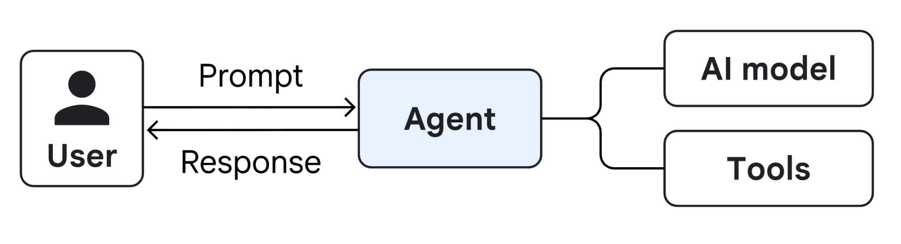
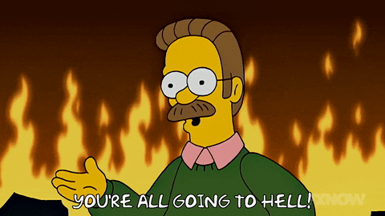

The longer and more varied the prompt, the higher the risk that the AI suffers from context dilution, forgetting instructions or hallucinating.
A single agent will struggle to excel simultaneously in different types of tasks (creative tasks, rigorous logical analysis, and mathematical calculations).
You cannot run tasks in parallel if a single brain has to supervise every micro-step in sequence.
A single agent tends to confirm its own errors. If it makes a mistake at the beginning of its reasoning, it will struggle to correct itself on its own.